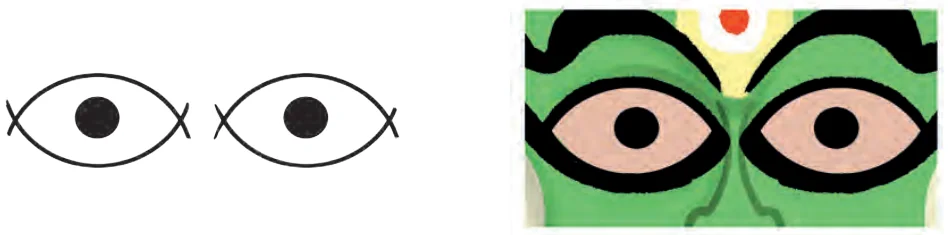
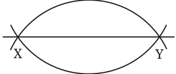
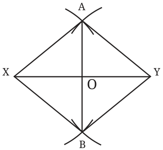
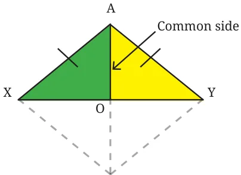
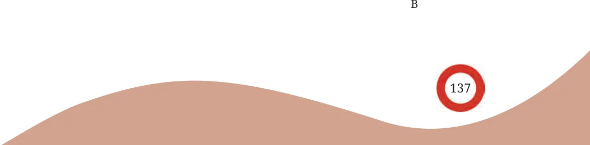
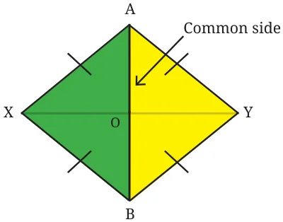
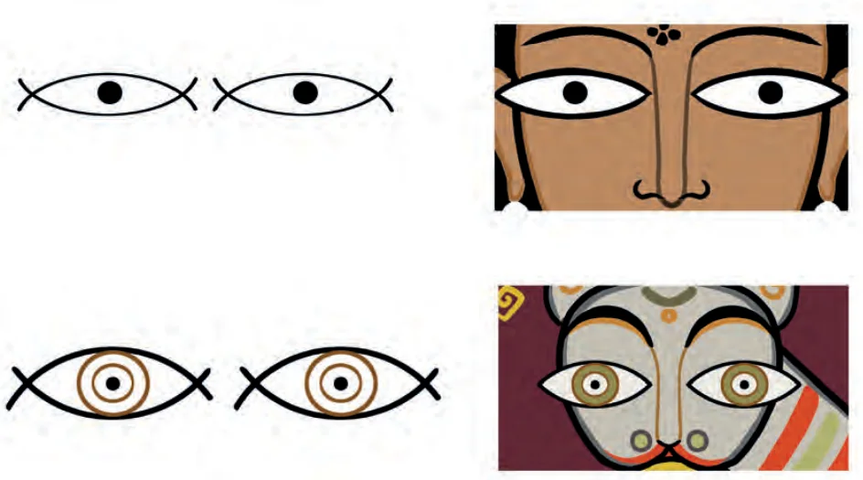
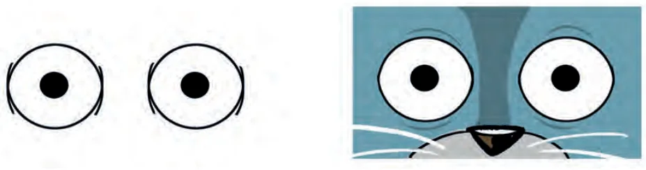
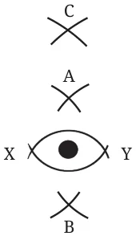

Eyes
Do you recall the ‘Eyes’ construction we did in Grade 6?

Of course, eyes can be drawn freehand, but we wanted to construct them so that the lower arc and upper arc of each eye look symmetrical. We relied on our spatial estimation to determine the two centres, A and B (see the figure), from which we drew the lower arc and upper arc respectively. A The arcs define a line XY that ‘supports’ the drawing though it is not part of the final figure. We can start with this supporting line and systematically find the centres A and B. For the eye to be symmetrical, or for the supporting line to be the line of symmetry, the upper and lower arcs should have the same radius. In other words, we must have \(AX = BX\). Since \(AX = AY\) and \(BX = BY\), this means \(B AX = AY = BX = BY\)

How do we find such A and B? \(^{A}\) From X and Y, draw arcs above and below XY, with the same radii. The two points at which the arcs meet, _{X} _{Y} above and below XY, give us A and B, respectively.
Use this to construct an eye.
In Fig. 6.1, join A and B with a line. Where Fig. 6.1 does AB intersect XY, and what is the angle formed between them? We observe that AB passes through the midpoint of XY, and is also perpendicular to it. A division of a line, or any geometrical object, into two identical parts is called bisection. A line that bisects a given line and is perpendicular to it, is called the perpendicular bisector.

Will the line joining the two points at which the arcs meet, above and below XY, always be the perpendicular bisector of XY, i.e., when XY is of any length, and the arcs are drawn using a radius of any length? This can be answered through congruence. Let us consider a line segment XY. Find points A and B such that \(AX = AY = BX = BY\). Draw the lines AB, AX, AY, BX and BY. Let O be the point of intersection between AB and XY.
Which two triangles should be congruent for AB to be the perpendicular bisector of XY (that is, O is the midpoint of XY and AB is perpendicular to XY)? If we show that \(\triangle AOX\) ΔAOY, then \(OX = OY\), and corresponding parts of congruent triangles. \(\angle AOX = \angle AOY\) because they are \(\cong\) Since \(\angle AOX\) and \(\angle AOY\) together form a straight angle, we have \(\angle AOX + \angle AOY = 180 ^{\circ}\) . Thus, \(\angle AOX = \angle AOY = 90 ^{\circ}\) . This establishes that O is the midpoint of XY and AB is perpendicular to XY.


In \(\triangle AOX\) and ΔAOY, we already know that \(AX = AY\), and AO is common to both triangles. If we can show that \(\angle XAO = \angle YAO\) then, by the SAS congruence condition, we can conclude that the triangles are congruent. To show this, we observe that \(\triangle ABX\) ΔABY. This is so because \(AX = AY\), \(BX = BY\), and AB is common to both the triangles. \(\cong\) Thus, we have \(\angle XAB = \angle YAB\), or \(\angle XAO = \angle YAO\) because they are corresponding parts of congruent triangles. Hence, AB is the perpendicular bisector of XY.

We can have eyes of different shapes.



How do we get these different shapes? Try! One way is to choose two other points C and D such that \(CX = CY = DX = DY\). An eye of a different shape can be drawn using these points.
Will C and D lie on the perpendicular bisector AB? The points C and D are at the same distance from both X and Y. We have just seen that joining any two such points gives the perpendicular bisector of XY. Since XY has only one perpendicular bisector, which is the line AB, _{D} the points C and D must lie on the line AB.
Justify the following statement using the facts that we have established. Any point that has the same distance from X and Y lies on the perpendicular bisector of XY. Thus, eyes of different shapes can be drawn by suitably choosing different pairs of points on the perpendicular bisector as centres to construct the upper and lower arcs of the eyes.